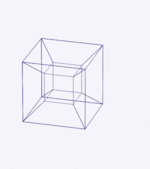

<center><h1>你好</h1>
<h2>世界</h2></center>
<iframe src="https://www.17coding.net",style="height:500px;width:200px;"></iframe>
<div id="a">xxx</div>

<canvas id="c" width="200" height="100"></canvas>

<p> </p>
我是熊孩子
<hr/>
哈哈哈哈
<ol>
  <li>金铁军</li>
  <li>潘明囡</li>
  <li>金熙呈</li>
</ol>
<ul>
  <li>金铁军</li>
  <li>潘明囡</li>
  <li>金熙呈</li>
  <ul>
    <li>aaa</li>
    <li>bbb</li>
    <li>ccc</li>
    <ul>
    <li>aaa</li>
    <li>bbb</li>
    <li>ccc</li>
    <ul>
    <li>aaa</li>
    <li>bbb</li>
    <li>ccc</li>
    </ul>
    </ul>
  </ul>
</ul>
<p></p><p>哈哈哈哈哈&nbsp;&nbsp;&nbsp;&nbsp;&nbsp;&nbsp;&nbsp;哈哈哈哈哈哈哈哈哈哈<p>哈哈哈哈哈哈哈哈哈哈哈哈哈哈哈哈哈哈哈哈哈哈哈哈哈</p>aaaaa</p>
&lt;

<video id="video" autoplay style="width:480px;height:320px"></video>
<button id="xxx">xxx</button>
<canvas id="canvas" width="1000" height="200"></canvas>
<script>  
var c = document.getElementById('c');
var cxt=c.getContext("2d"); 
cxt.fillStyle='#FF0000';
cxt.fillRect(0,0,150,75);

    url =window.webkitURL || window.URL || window.mozURL || window.msURL;
    var video = document.getElementById('video');
    function getUserMediaToPhoto(constraints,success) {
         navigator.mediaDevices.getUserMedia(constraints).then(success);
    }
    //成功回调函数
//    function success(stream){
        //兼容webkit核心浏览器
//        var CompatibleURL = window.URL// || window.webkitURL;
        //将视频流转化为video的源
//        video.src = CompatibleURL.createObjectURL(stream);
//        video.play();//播放视频
//    }
    //getUserMediaToPhoto({video:true},function(stream){video.src=url.createObjectURL(stream);},function (error) { alert(error); });
    navigator.mediaDevices.getUserMedia({video:true}).then(function(stream){video.src=url.createObjectURL(stream);});
//    capture.addEventListener('click',function() {
        // 将video画面描绘在canvas画布上
//        context.drawImage(video,0,0,480,320);
//    })
    //document.body.addEventListener("click",function(e){a.innerText=screenX+screenY;})
    //var time;
    //function timer () {
      //time = setInterval(timer(),10);
      //a.innerText="aaa";
      //var x =event;
      //a.innerText=(x.pageX +","+x.pageY);
    //}
function g(event) {     //event是一个声明了全局变量的一个对象
  var e = event || window.event;    //Firefox下是没有event这个对象的！！
  return {'y':e.screenY,'x':e.screenX}  
  }
document.onmousemove=function(){a.innerText=(g(event).x)+","+(g(event).y);}
</script>
